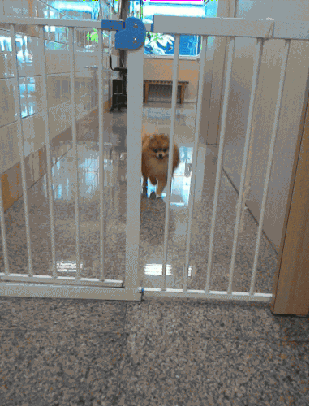

Présentation CIMI
Communauté informatique au sein du ministère de l'intérieur
Le 12 novembre 2018
Eric POMMEREAU
CEO & Founder
Ancien policier et développeur (15 ans)
Ingénieur des SIC (depuis 2010)
Chef de section cartographie au ST(SI)2
Aujourd’hui chargé de mission à la DCPAF
 @eric_pommereau
@eric_pommereau
http://heroteknik.fr/
La CIMI... un constat
Informatique compartimentée
Moyens de communication liés à :
- Une affectation
- Une fonction
Peu de ressources partagées
Informations redondantes et éparpillées
Nécessité de décloisonner !
Historique
2004 : forum informatique Police Judiciaire
2011 : plaidoyer pour une communauté de pratiques
Juin 2013 : présentation au chef du ST(SI)2
Juillet 2013 : lancement de la CIMI
Les fondations

Un groupe, une même vision
Cadrage rigoureux (organisation, limites, activités...)
Rédaction des statuts
Une démarche acceptée par les acteurs SIC du MININT et au-delà : DICOM, DINSIC, ETALAB...
Des valeurs implicites
Inspiration asso. OpenStreetMap France
Bienveillance
Ouverture
Neutralité (transversalité)
Transparence
Confiance
Les objectifs
Fédérer les passionnés d'informatique
Connecter les personnes
Favoriser l'entraide
Assurer une veille technologique
Créer des liens informels entre les directions informatique
Composition du bureau
Ingénieur SIC (SGAMI-SE)
Commandant de police (PP)
Commandant de gendarmerie (DGGN)
Gardien de la paix (PP)
Ingénieur SIC (DGPN/DCPAF)
Technicien SIC (DSIC)
Les outils
Sur réseau MININT - Bientôt sur le rie
CMS : http://cimi.ext.minint.fr
Wiki : http://wiki.cimi.ext.minint.fr
Forum : http://forum.cimi.ext.minint.fr
Sur internet
Twitter : @communaute_cimi
Facebook :communauteCIMI
GitHub : communaute-cimi
Le forum
4486 messages - 1546 sujets - 181 membres
Espace collaboratif SLACK 
Réservé exclusivement aux ingénieurs des SIC
Plus de 150 inscrits !
Les miditechs
Récupérer les images
Les miditechs : Thèmes
La cartographie
Agilité dans les projets
Démystifier la police prédictive
L'État plateforme
Le darkweb pour l'opérationnel
Des hackers contre les catastrophes naturelles
Le RIE
Save the date !
Prochain rdv le 12 novembre :
La qualité pilotée par les tests
Puis le ... décembre :
La transformation numérique de l'État
Qui participe ? (Organismes)
Au MININT :
MGMSIC
ST(SI)2, DGPN/DGGN
DSIC
PP
...et ailleurs :
MINEFI (douanes, DGFIP, APIE)
Justice, MINDEF
SGMAP DINSIC
Qui participe ? (métiers)
Informatique :
projets, exploitation, développement, architecture, urbanisation...
Sécurité :
Enquête, renseignement,
sécurité publique...
Autres domaines :
Achats, RH, Logistique
Bilan - Points négatifs
Peu de participation « active »
Silence institutionnel (mais pas externe)
Activité chronophage et énergivore
Des questions
Notre identité ? (granularité : métier, domaine...)
Quelles relations avec l'institution ?
Bilan - points positifs
Une forte demande :
Participation aux miditech's
Travail de veille sur les R.S.
Ateliers, aide, assistance...
Comble un manque :
Au niveau du MININT
Au niveau interministériel (DINSIC)